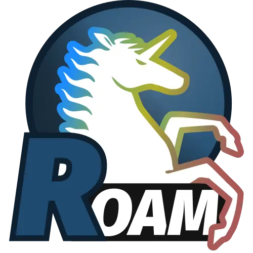

Path to org-roam v2

In my opinion, org-roam is among the best things that happened to Emacs during the last 5 years. Forget Zettelkasten method, org-roam is a solution for non-hierarchical note-taking regardless of methodology you are worshiping. The most important and appealing feature of org-roam is its database! Just imagine, in less than a second I can filter a collection of 10000+ notes by tags, title, aliases, links and other things. This is what made my wine tracking solution usable with ever growing collection of tasting notes, and this is what I used to build various tools for presenting non-trivial views around my notes (example of a public one).
And now org-roam has released V2, the first major redesign affecting both users and authors of libraries extending org-roam. And while there are breaking changes requiring some effort from users, V2 is so amazing and is so much more stable than V1, that my advice is to drop the chains of old org-roam and embrace all the goodness V2 brings.
Unfortunately, major redesign means lots of breaking changes and in this post I am going to describe my migration experience, code I used to migrate my notes and share some thoughts after migrating a code base comparable to org-roam itself. Of course, it touches my precious vulpea library (the fox image is its icon), so expect some advertisement™.
NB. Migration process means adapting to and overcoming breaking changes. Since V2 is full of them, this article might look pessimistic or depressing. But don’t get fooled, I think that V2 is amazing. I am very happy to use it on a daily basis for several months and I never looked back. Jethro is doing amazing work! As well as all contributors (with extra kudos to Noboru Ota, because Noboru rocks).
Change Log:
[2021-07-24 Sat]Update post to reflect release of org-roam v2.
Key changes
org-roam V2 has many changes, and some of them are UX-related (e.g. new completing read, revamped roam buffer), while others are fundamental in a way that they affect interactive and programmatic usage. So I am going to focus on these changes. I might miss some very important things that I have never used, and if so, just let me know and I will update the list.
Structured note
One of the first thing that I’ve been playing around in vulpea is definition of a note. Initially it was a property list, but I quickly started to hate this approach (even thought it was well defined) and switched to struct. Why? Because a formal definition of data types makes it easier to build on top of that. You have completion for fields, you have byte compiler to warn you on missing field, etc. So even if as an author of library you are totally fine with not having a formal definition of your data types, they are a game-changer for people using it.
This is why I am so happy that org-roam finally formalised org-roam-node. And one of the best parts about this change - there is no distinction between file-level notes and headings anymore. This is what I’ve done in vulpea and now with V2 I can remove all those (if (= level 0) (treat-as-file) (treat-as-heading)) indirections.
The only thing that you should keep in mind, having org-roam-node doesn’t mean that all fields are populated, you might need to call org-roam-populate. As far as I can tell, the reason is that all data is scattered across multiple tables and gathering everything is an expensive operation. This is the main difference between org-roam-node and vulpea-note, which is always populated when returned from vulpea functions (achieved by horrific SQL expression). On the other hand, vulpea-note contains less information than org-roam-node.
Mandatory ID
Following note type formalisation, ID property became mandatory for a node to be part of org-roam database. Meaning that if your heading doesn’t have an ID, it will not be picked up by org-roam.
And I am happy about this requirement, because ids are the only way to identify a note (I know, tautology). And vulpea required them from the day 1. In my sense, missing ID means that the note doesn’t exists yet (or at least, the system doesn’t know about it yet).
This is important, because again, it reduces any indirection in libraries code related to note/node identification. Just ID and that’s it.
Another reason to have mandatory ids is linking.
ID Links
Initially org-roam used file links. This means that whenever you linked a note, it used absolute (or relative???1) file path to said note. But these paths are very sensitive to file system changes, which should be irrelevant in non-hierarchical note-taking tool. Right? You change file name, now all links must change. Have fun if for some reason it was not changed automatically. You moved directory, now all links must be updated. You synchronise org-roam-directory across multiple computers, with different path to said directory (e.g. /home/boris/org vs /Users/boris/notes/org), now there are no links between your notes! Task failed successfully, as they say! It’s easy to become paranoid with such approach, because you can not trust a system that misses links.
Now, ids don’t change (quite a philosophical question about identity, but let’s skip this one for another day). And Org mode supports ID links. Perfect! With V2 all links are id based and less maintenance is required when you move something around. Great, users of org-roam and its maintainers are both winners.
Not sure if this brings much to authors of libraries, but in general it’s a very good change that allows to remove most of safeguards related to links. If you still believe that path links are somehow superior, please let me know why! I might be missing something here.
Tags
IMHO, one of the biggest breaking change is how things are being tagged now. In V2 there is no separate tagging system. In V1 there are several sources of org-roam tags - path elements (e.g. sub-directories relative to org-roam-directory), properties and Org mode tags. With V2 there are only Org mode tags.
This is quite a complex topic, because with this kind of freedom, it’s easy to exploit and over-complicate usage of tags in org-roam. The key thing to remember - while Org mode tags are great when doing agenda searches, agenda does not work with files, but with headings only. And if you were using roam tags for categorisation (so you could filter out stuff from db based on these tags), now you have to deal with Tag Inheritance, which is not a big deal in some cases, but still.
Another thing to keep in mind, valid tag for #+roam_tags is not necessary a valid tag for #+file_tags. For example, spaces, colons are not allowed - tags are normal words containing letters, numbers, ‘_’, and ‘@’ (see org-tag-re). So you need to keep that in mind during migration (covered in attached script).
Since I was abusing tagging system, I had to go over every such case and find another way to achieve my goal. Just as example, I was tagging all my litnotes with two types of tags: content type (e.g. content:book, content:article, etc.) and status (e.g. status:new, status:ongoing, status:done, status:dropped). I didn’t want to use fieltags for this purpose, because I would need to disable inheritance for all possible values. So my solution is to move this kind of metadata to … metadata list.
Capture
When you only migrate to org-roam or when you automate stuff, having an ability to programmatically create new note synchronously and get it as result is priceless. While it was possible with V1, it required a certain hack. With V2 it is no longer needed, because you can provide id of a note during capture process and then simply query it (just don’t forget to pass immediate-fnish property).
And the most cool thing about new capture process is that org-roam-capture-templates became even closer to Org mode capture template, meaning that you can configure capture stuff in so many fancy ways… I am yet to discover this new wonderful world.
Notes migration
Migration to V2 requires changes to your notes:
- make sure that each file contains an id;
- move
roam_keytoroam_refproperty; - move
roam_aliastoroam_aliasesproperty; - move
roam_tagstofiletagsand- make sure they do not contain ‘:’ or spaces;
- extract path tags;
It can be achieved by using helpers from vulpea and the following script (you must be on org-roam-v2):
(defun vulpea-migrate-buffer ()
"Migrate current buffer note to `org-roam' v2."
;; Create file level ID if it doesn't exist yet
(org-with-point-at 1
(org-id-get-create))
;; update title (just to make sure it's lowercase)
(vulpea-buffer-title-set (vulpea-buffer-prop-get "title"))
;; move roam_key into properties drawer roam_ref
(when-let* ((ref (vulpea-buffer-prop-get "roam_key")))
(org-set-property "ROAM_REFS" ref)
(let ((case-fold-search t))
(org-with-point-at 1
(while (re-search-forward "^#\\+roam_key:" (point-max) t)
(beginning-of-line)
(kill-line 1)))))
;; move roam_alias into properties drawer roam_aliases
(when-let* ((aliases (vulpea-buffer-prop-get-list "roam_alias")))
(org-set-property "ROAM_ALIASES"
(combine-and-quote-strings aliases))
(let ((case-fold-search t))
(org-with-point-at 1
(while (re-search-forward "^#\\+roam_alias:" (point-max) t)
(beginning-of-line)
(kill-line 1)))))
;; move roam_tags into filetags
(let* ((roam-tags (vulpea-buffer-prop-get-list "roam_tags"))
(file-tags (vulpea-buffer-prop-get-list "filetags"))
(path-tags (seq-filter
(lambda (x) (not (string-empty-p x)))
(split-string
(string-remove-prefix
org-roam-directory
(file-name-directory (buffer-file-name)))
"/")))
(tags (seq-map
(lambda (tag)
(setq tag (replace-regexp-in-string
;; see `org-tag-re'
"[^[:alnum:]_@#%]"
"_" ; use any valid char - _@#%
tag))
(if (or
(string-prefix-p "status" tag 'ignore-case)
(string-prefix-p "content" tag 'ignore-case)
(string-equal "Project" tag))
(setq tag (downcase tag)))
tag)
(seq-uniq (append roam-tags file-tags path-tags)))))
(when tags
(apply #'vulpea-buffer-tags-set tags)
(let ((case-fold-search t))
(org-with-point-at 1
(while (re-search-forward "^#\\+roam_tags:" (point-max) t)
(beginning-of-line)
(kill-line 1))))))
(save-buffer))
(defun vulpea-migrate-db ()
"Migrate all notes."
(interactive)
(dolist (f (org-roam--list-all-files))
(with-current-buffer (find-file f)
(message "migrating %s" f)
(vulpea-migrate-buffer)))
;; Step 2: Build cache
(org-roam-db-sync 'force))Simply run M-x vulpea-migrate-db and wait until the dirty work is done. Let me know if it doesn’t work for you. More discussion around migration can be found on official guide, discourse, GitHub Gist and GitHub Wiki.
Code migration
And this is the trickiest part, because V2 is taking revolutionary approach instead of evolutionary approach, you just have to deal with huge amount of breaking changes. Migrating my notes took around an hour and a half (including patching migration script, iteratively fixing things, pouring more wine, and fighting with issues caused by misusing git-gutter2). Migration of vulpea, vino and personal configs took more than a week of work. And it was not that bad thanks to (1) having vulpea and vino covered with tests (so I simply was fixing them), (2) using byte compiler which caught many changes and (3) having most of my code based on vulpea, so lots of stuff got fixed transitively3.
Now, the real question is what are the major changes code-wise? Different database scheme, formalized org-roam-node data type, new capture flow, new utilities (some are gone, but there are many good new ones).
Since V1 lacked good abstraction over database, it was very common to… well you know, use org-roam-db-query directly to execute arbitrary SQL queries4, which of course relies on knowing the scheme. But this coupling bites really hard with V2, because the scheme changed dramatically. So you just have to sit down and work with every query you perform. Some changes are trivial, some are not. Unfortunately, there is no pill here. My advice is to minimise amount of direct queries by using functions provided by org-roam or extracting them into your own helpers.
With org-roam-node and some other data types everything becomes really nice. There is no need for indirection for file-level or heading-level nodes anymore. You know exactly, what fields you have. The only thing you need to keep in mind - not all fields are populated, so there is org-roam-populate that works with various types.
You can check my PRs related to migration to V2 for inspiration (unfortunately most of them already have new unrelated features):
- vulpea#92
- vino#100
- environment#87d23cd, with follow-ups:
- environment#57e6fe4
- environment#1febc7a
- … and many more
And before you jump into changing your code base, I suggest to go over Developer’s Guide to Org-roam.
What about vulpea?
Some of the core ideas of vulpea got implemented in org-roam now (definitely not claiming that I have played any role in this, I am sure Jethro had this in mind for a long time). And I asked myself - is there still a need for vulpea? Like, there is org-roam-node, why do I need vulpea-note? There is new and wonderful capture process, why do I need vulpea-create? Many questions like this. But fundamentally I think there are only two questions. Is vulpea still useful for me? And is vulpea still useful for others?
For me - definitely yes. Because it gives me abstractions and utilities to build other stuff on top. Migration process illustrated that I can do all the heavy lifting in vulpea and get most of the stuff fixed in many other places. Tests5 made this migration really smooth (of course I have not covered every single shit).
For others - it’s for you to decide, and I believe that yes :) Forget abstractions, vulpea provides various utilities for working with Org Mode and Org Roam files that you might want to use (for dealing with buffer properties, e.g. #+key: value, and for dealing with description lists). It also provides a custom configurable interface for selecting notes - vulpea-select with interactive functions using it (vulpea-find, vulpea-find-backlink and vulpea-insert). I will cover them in a separate article. And of course, my favourite functions - vulpea-db-query and vulpea-create.
So I am going to continue support and development of vulpea library. And if you encounter any issues (with code, documentation etc.) or have a feature request - just don’t hesitate to open an issue, start a discussion, comment on this post, or write me an email.
Any lessons learned?
The most important lesson for me is that vulpea has huge ROI. Primary goal of vulpea6 is to be a tested library for building solutions for note taking. And this migration process simply proved that the goal worth the effort.
Another lesson I am taking from this situation is that revolutionary approach is stressful and time consuming for users (not sure about Jethro, I hope he is all right). Even though in this case it totally worth all the nerves and doubts. It is stable, polished and better. It also implies another lesson - sequel might be even better than original :)
I am also annoyed by the fact that I keep abusing tagging system whenever I encounter it. Whenever it becomes multidimensional, it is a sign to stop and take a step back. Tags should not turn into total mess7.
And of course, org-roam community is fantastic. I don’t read all the messages on org-roam.discourse.group, but when I do, I am simply amazed by all the use cases you folks have, and how helpful you are! Seriously, this is amazing. And it also a credit to Jethro. Without doubt, org-roam is the best thing happened in my note-taking life.
Resources
- org-roam#1401
- Org-roam major redesign
- Developer’s Guide to Org-roam
- Hitchhiker’s Rough Guide to Org roam V2
- The Org-roam v2 Great Migration
I don’t even remember, because I quickly switched to ID links once they landed to
org-roam.↩︎Silly, but I’ve ‘adopted’ an approach by Doom Emacs where gutter is updated asynchronously. And during migration I was opening and modifying too many org files (hey, more than 10000) which exhausted Emacs. I’ve spend too much time trying to figure out why it was happening.↩︎
And whatever was using
org-roaminternals was migrated tovulpea.↩︎Again, tautology! I love them.↩︎
Just for the reference, I am not a TDD advocate. I usually write tests after features and mostly before bug fixes.↩︎
To be precise,
vulpea(and sometimesKitsuneBook) is just a name I am using for note taking utilities. At some point of time it was a Haskell command line application… Now it’s an Emacs Lisp library leveraging Org Mode and Org Roam! It definitely has more active life than me.↩︎Maybe a partial mess, but definitely not total.↩︎